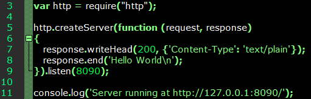
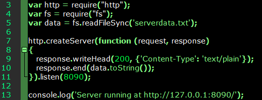
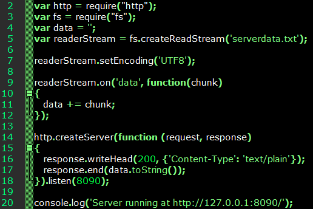
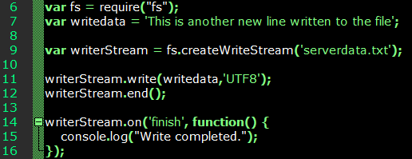
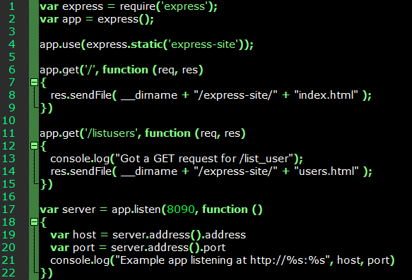
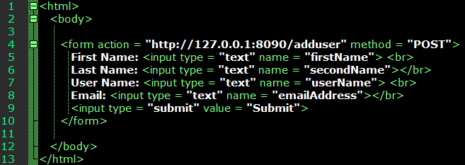
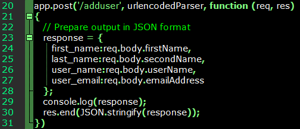
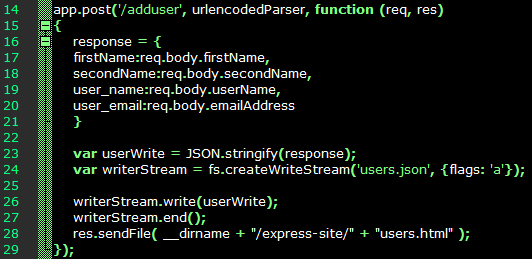
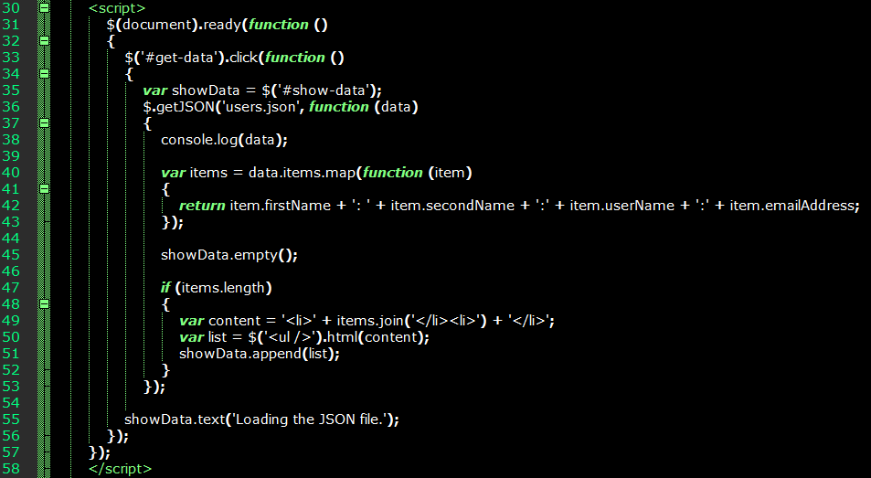
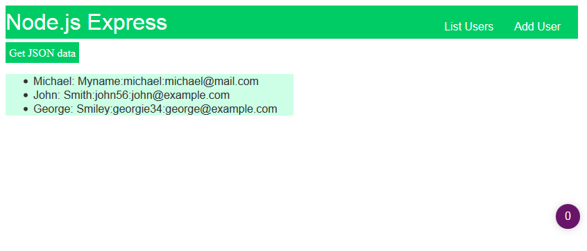

Using Node.js, JSON and jQuery, I've managed to develop something much like an MVC application that's considerably more lightweight than a .NET project, and anyone can use this as a template or basis for their own Web application project.
Node.js enables the creation of Web servers, and enables communication between client-side JavaScript and the server. A Node.js application has the following:
- Module imports
- Server creation
- Response
The source code in the following screenshots is available on GitHub.
Creating a Simple Node.js Server
The server-side code for this is fairly basic:

Note the server created by this method is just a process listening on port 8090 (or whichever port is specified), and doesn't host Web pages at this stage. Instead it returns an HTTP response using response.writeHead() to determine the header and response.end() to determine the body. When this code executes console.log() will print the 'Server running' message in the command line. A browser sending a request to localhost:8090 will display 'Hello World' as the response. I saved this file as 'nodeserver.js'.
To start the server using the Node.js interpreter, simply navigate the command line to the directory where the .js file's stored, and enter the following:
node nodeserver.js
File Operations
Perhaps the main reason we want server-side code, rather than something entirely client-based is data persistence. An application isn't much use if it can't store and retrieve data. Here I have two files: file-op.js server-side script, and the serverdata.txt data file. The latter simply contains two lines of text.

This time we import both the http and filesystem (fs) modules:
var http = require("http");
var fs = require("fs");
And specify the file to read:
var data = fs.readFileSync('serverdata.txt');
And this time, the HTTP response is defined as the contents of serverdata.txt:
http.createServer(function (request, response)
{
response.writeHead(200, {'Content-Type': 'text/plain'});
response.end(data.toString());
}).listen(8090);
Streaming Data and Writing to File
The filesystem module enables the JavaScript to perform I/O with files using createReadStream() and createWriteStream(). As before, we import http and the filesystem modules, but leave the data as a null value. Another variable is needed to declare the read stream. The data returned by the fs.createReadStream() function populates readerStream.

And to write to file using createWriteStream:

Although this isn't much at this point, it demonsrates that we can use persistent storage with a bit of JavaScript.
Node.js Express
This can be used to achieve the same thing as ASP.NET MVC, as it handles routing, REST requests and other server-side operations. First we need to use npm to install Express.js.
npm install express --save
We'll use the following simple express server to understand routing:

As with ASP.NET MVC, the controllers here determine actions to be performed when the server receives a given request in the form of a URI. To initiate an action, we only need to send its name as part of the URI in the browser. For example, 'http://localhost:8090/listusers' will cause express to return the response for that app.get() method. It responds by calling the sendFile() function that returns users.html. This is the equivalent of MVC's 'return view()'.
Reading and Writing JSON Files
Of course, most Web applications function as an interface to some data source. Here I'll try and use a JSON-based source to store and retrieve the data, with data being sent between the HTML and the JavaScript controllers. The Express.js site lists the database integrations it supports.
For the following the body-parser is required through npm:
npm install body-parser --save
In the HTML file we have a simple form with four fields. To the JavaScript file we add another method for handling the data submitted from the HTML.


If the fields are populated and submitted, the following JSON output is generated:
{"firstName":"michael","secondName":"mysecondname","user_name":"michael","user_email":"michael@mail.com"}
Now we need a .json file for the application to append, for example 'users.json'. Here's the solution I hacked together, by trial and error:

This can also be extended to MongoDB, which is also JSON-based, if a data access layer needs to be added to the application.
To do the reverse - rendering JSON data in an HTML page - we'll need jQuery and a script that fetches the data returned by the Node.js controller. In the HTML I have two elements, 'get-data' and 'show-data'. The first is a link that triggers the JSON reader JavaScript.
The handler function will read the JSON file and return the output to the 'show-data' element, placing the read values in an HTML list.


References
JQUERY FOUNDATION. 2017. jQuery. [WWW].
https://jquery.com. (6th September 2017).
MICHAEL. 2017. NodeJS.
GitHub. [CODE].
https://github.com/xerocrypt/Misc/tree/master/NodeJS. (6th September 2017).
NODE.JS FOUNDATION. 2017. Node.js. [WWW].
https://nodejs.org/en/. (6th September 2017).
NODE.JS FOUNDATION. 2017. Express. [WWW].
https://expressjs.com. (6th Setptember 2017).
NODE.JS FOUNDATION. 2017. Express Database Integration.
Express. [WWW].
https://expressjs.com/en/guide/database-integration.html. (6th September 2017).
TUTORIALSPOINT. 2017. Node.js - Introduction.
Learn Node.js. [WWW].
https://www.tutorialspoint.com/nodejs/nodejs_introduction.htm. (6th September 2017).